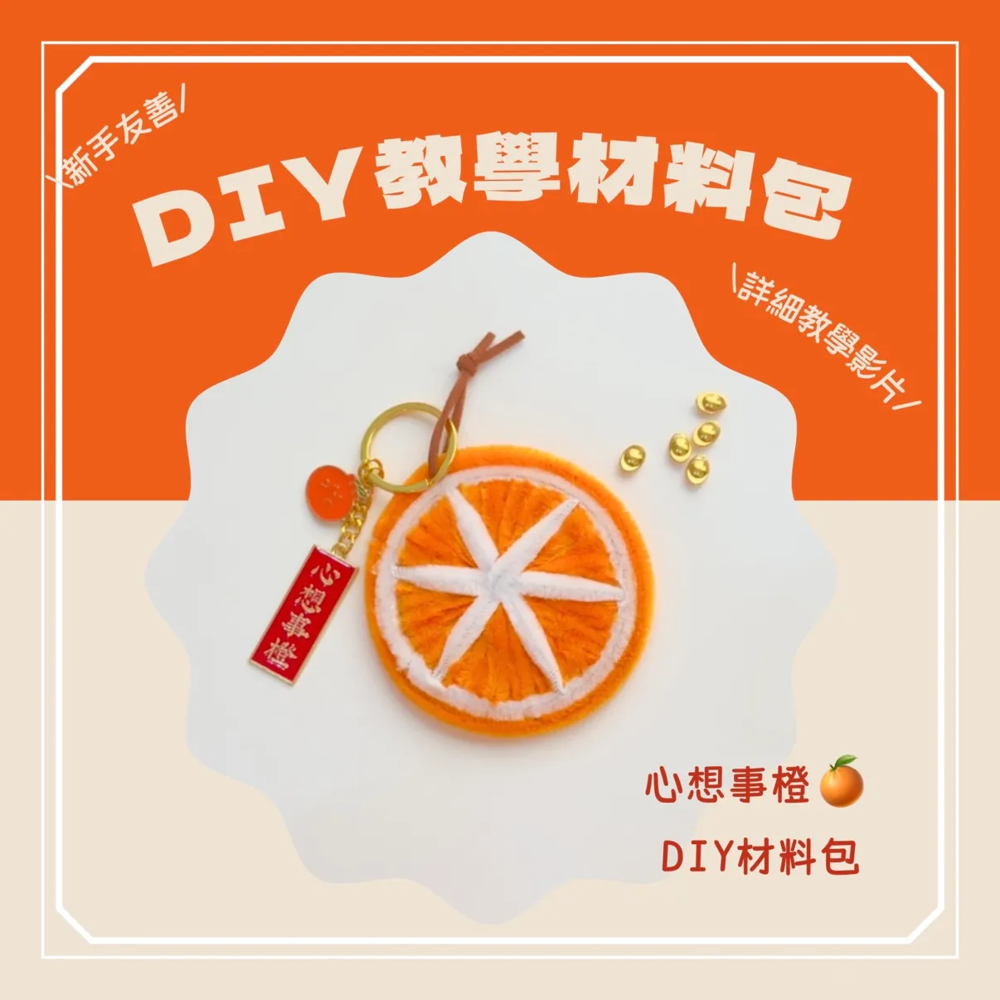

一開始不一定馬上做得完美，沒關係。
我們可以從中先感受 — 自己喜不喜歡這件事、做的時候是什麼感覺。

一開始不一定馬上做得完美，沒關係。
我們可以從中先感受 — 自己喜不喜歡這件事、做的時候是什麼感覺。
大家也可以叫我莎莉就好 🙂
職涯經歷多次轉職，
從觀察自己的喜好，
慢慢摸索各種可能性。
幫助復健患者，可以一步一步順利完成任務。
也學會了架設網站。
能把複雜的東西變簡單 ← 來自治療師的拆解能力
架設網站來販賣作品 ← 來自工程師的技術能力
中間有過撞牆期，也有過想放棄的時候。
但回頭看，每一段嘗試，只要是自己感興趣的嘗試，都能有所收穫。
媽媽是退休後，才開始做手作的。
只要願意動手，
隨時都可以創造新的價值。
免費上架
超商寄送，方便又安全
新手最容易開始的平台
發文分享你的作品
從親友開始
慢慢有第一個訂單
對方說：「我下單了但付不了款，請你點這個連結幫我驗證」
➜ 那是釣魚假網站，會偷你的帳號密碼。
對方說：「你的帳號被誤設成分期付款，請你去 ATM 解除設定」
➜ 那是ATM 轉帳詐騙，操作下去就把錢轉給對方了。
你做什麼事的時候，
比較不會看時間？
不用很厲害，能做出來就算。
做菜、整理、照顧人、手作、聊天……都算。
別人會謝謝你做什麼？
三個問題的交集，
就是你可以開始的方向。
剪圓形紙板
用橘色毛根填充
剪白色毛根尖尖
貼上外層橙子皮
掛上吊飾完成 🎉
— 一步一步來，做完就好。